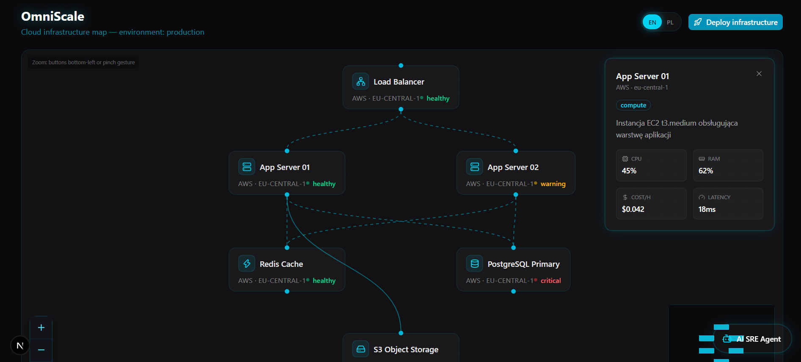
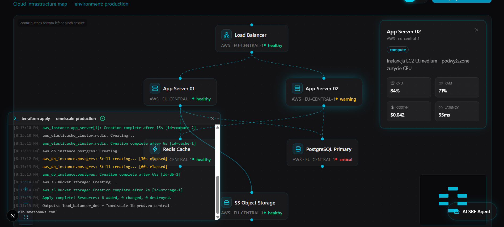
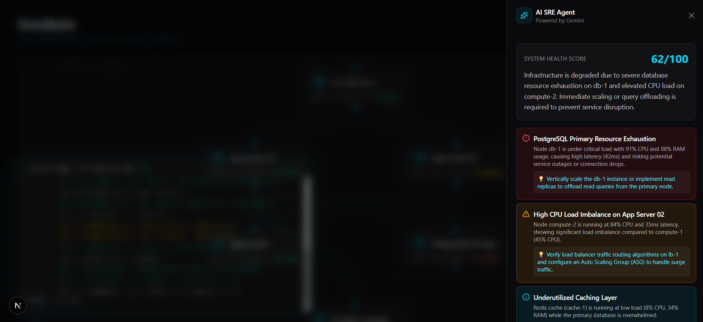
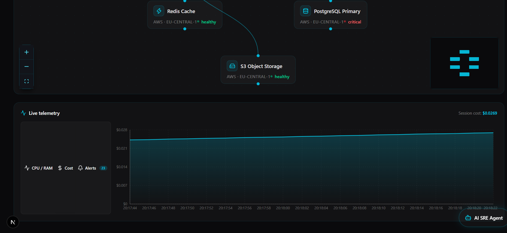
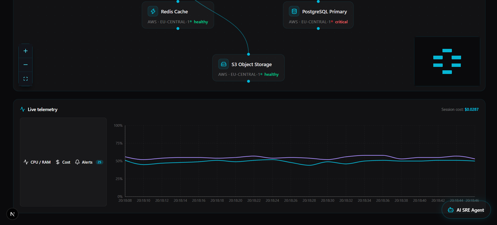

Omniscale
AI-powered platforma do orkiestracji infrastruktury chmurowej z wbudowanym agentem SRE — deklaratywne zarządzanie zasobami inspirowane Terraform, spięte z dashboardem monitorowania w czasie rzeczywistym inspirowanym Datadog.
Aplikacja w akcji





Infrastruktura, którą
agent widzi za ciebie
Omniscale łączy dwa światy, które zwykle żyją w osobnych narzędziach: deklaratywne zarządzanie zasobami chmurowymi w stylu Terraform oraz dashboard obserwowalności znany z Datadog. Zamiast przełączać się między konsolą chmury a panelem metryk, zespół DevOps/SRE dostaje jedno miejsce do definiowania, wdrażania i monitorowania infrastruktury.
Sercem platformy jest wbudowany SRE Agent oparty na Google Gemini — obserwuje telemetrię w czasie rzeczywistym, wykrywa anomalie i potrafi zaproponować lub wykonać działania naprawcze bez ręcznej interwencji.
Stack technologiczny
Jak to działa
Zasoby chmurowe definiowane są deklaratywnie, podobnie jak w Terraform, a warstwa API Next.js tłumaczy je na akcje wobec dostawcy chmury.
const resource = defineResource({
type: "compute.instance",
spec: { region, size },
});
Zależności między zasobami renderowane są jako interaktywny graf — węzły i krawędzie odzwierciedlają realną architekturę systemu.
<ReactFlow
nodes={infraNodes}
edges={infraEdges}
/>
Metryki wydajności i stanu systemu spływają do dashboardu i są wizualizowane w czasie rzeczywistym przy pomocy Recharts.
<LineChart data={metrics}>
<Line dataKey="latency" />
</LineChart>
Agent oparty na Google Gemini analizuje strumień telemetrii, wykrywa anomalie i proponuje bądź wykonuje działania naprawcze.
const diagnosis = await sreAgent.analyze( telemetrySnapshot);
Przekroczenie progów metryk lub wykrycie anomalii przez agenta uruchamia alert widoczny na dashboardzie i w kanałach powiadomień.
if (metric.value > threshold) {
notify(alertChannel, metric);
}
Powtarzalne zadania operacyjne — skalowanie, restarty, czyszczenie zasobów — mogą być delegowane agentowi zamiast obsługiwane ręcznie.
await sreAgent.execute( recommendedAction);
Co wyróżnia platformę
Dlaczego te technologie
| Technologia | Zastosowanie | Powód wyboru |
|---|---|---|
| Next.js | Framework full-stack | Server-side rendering, API routes, optymalizacja |
| ReactFlow | Diagramy topologii | Interaktywne wizualizacje architektur |
| Recharts | Wykresy metryk | Łatwa integracja, pełna responsywność |
| Framer Motion | Animacje UI | Płynne przejścia i mikrointerakcje |
| Google GenAI | SRE Agent | Zaawansowana analityka i automatyzacja |
| TailwindCSS | Stylowanie | Szybki development, responsywny design |
| TypeScript | Cały kod (97.8%) | Bezpieczeństwo typów, lepsze wsparcie IDE |
Jak uruchomić
npm install
npm run dev # aplikacja dostępna na http://localhost:3000
npm run build npm start
npm run lint